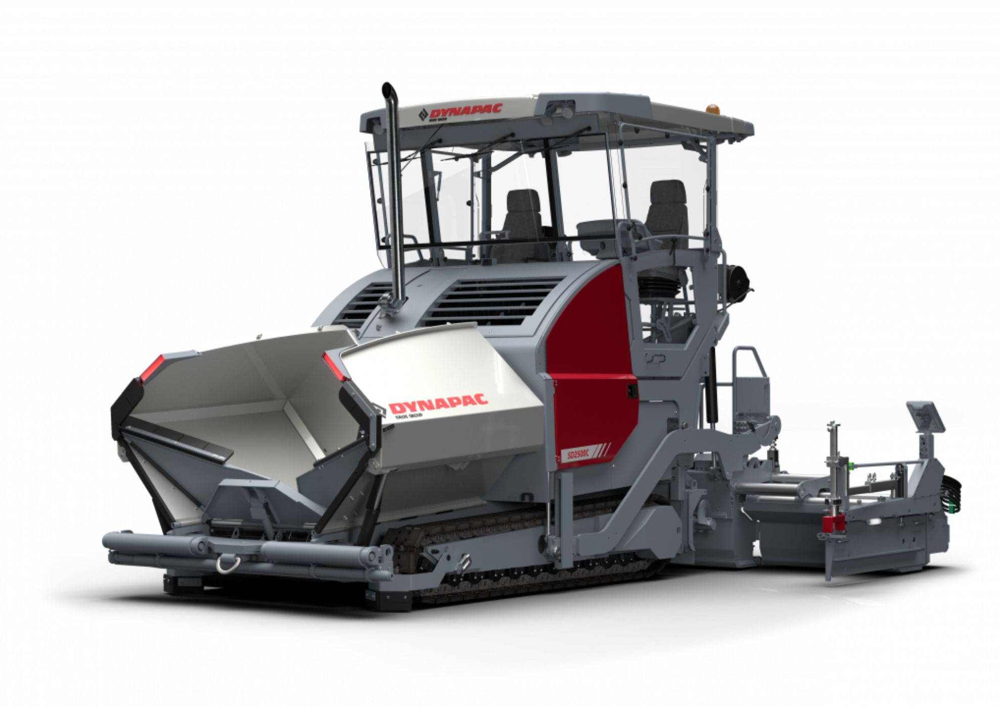

SD2500C

As pavimentadoras Dynapac SD unem engenharia e inovação, oferecendo nivelamento avançado, cabine deslizável e várias opções de potência, incluindo aquecimento a gás ou elétrico. Garantem alta qualidade e máxima disponibilidade com um sistema operacional unificado.